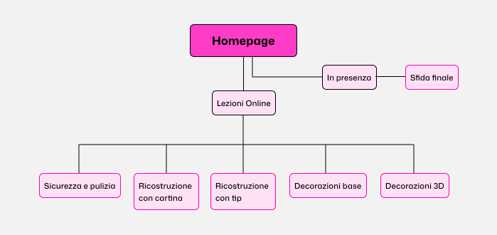

Fiumano Alessandra - esame html - 2026
TIPSY. NAILS ARE CULTURE
Trasformare la nail art da estetica a movimento culturale attraverso un’esperienza mista, tra lezioni online e sfida dal vivo.

- Studente
- Alessandra Fiumanò
- Corso
- ITS Web Design e Strategie Digitali
- Modulo
- UI/UX Design
- Scuola e anno
- ITS Academy I-CREA, CFP Bauer Milano · 2026
CONCEPT
Il contesto e l'opportunità
Il settore della Nail Art in Italia sta vivendo una vera e propria rivoluzione culturale: non si tratta più di semplice estetica cosmetica, ma di una forma d'arte visiva, espressione di identità e cultura urbana. Tuttavia, la formazione tradizionale è spesso rigida, costosa e frammentata.
Obiettivo del progetto:
Progettazione dell'identità visiva e del sito web per Tipsy, il primo festival di Nail Art a Milano con format misto (online e dal vivo). L'esperienza è strutturata in due fasi principali:
- Formazione Online (13–17 Luglio): 5 giornate di masterclass in streaming su tecniche avanzate tenute da professioniste.
- Evento Finale (18 Luglio): Sfida dal vivo a Milano con gare live, giuria di esperte e networking.
Orientarsi
Scoprire la struttura del festival, le date chiave e scegliere il proprio percorso formativo.
Formarsi
Esplorare il programma dei 5 giorni di masterclass online e i profili delle docenti.
Competere
Analizzare i dettagli della Sfida Finale dal vivo a Milano, il regolamento e la giuria.
Sitemap
Organizzare l'esperienza: dal digitale al dal vivo
La Home orienta e presenta l'iniziativa, la sezione Masterclass guida la formazione online, mentre la pagina Sfida Finale fornisce tutte le indicazioni per l'evento dal vivo.
Percorso fluido
La struttura del sito accompagna l'utente in modo graduale: scopre il valore del festival nella Home, approfondisce i contenuti dei corsi online e si iscrive alla competizione finale a Milano.
Apri la mappa completa
